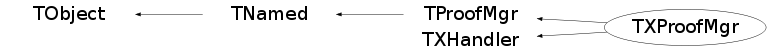

class TXProofMgr: public TProofMgr, public TXHandler
TXProofMgr The PROOF manager interacts with the PROOF server coordinator to create or destroy a PROOF session, attach to or detach from existing one, and to monitor any client activity on the cluster. At most one manager instance per server is allowed.
Function Members (Methods)
public:
| TXProofMgr(const char* url, Int_t loglevel = -1, const char* alias = "") | |
| virtual | ~TXProofMgr() |
| void | TObject::AbstractMethod(const char* method) const |
| virtual void | TObject::AppendPad(Option_t* option = "") |
| virtual TProof* | AttachSession(Int_t id, Bool_t gui = kFALSE) |
| virtual TProof* | AttachSession(TProofDesc* d, Bool_t gui = kFALSE) |
| virtual void | TObject::Browse(TBrowser* b) |
| static TClass* | Class() |
| virtual const char* | TObject::ClassName() const |
| virtual void | TNamed::Clear(Option_t* option = "") |
| virtual TObject* | TNamed::Clone(const char* newname = "") const |
| void | TProofMgr::Close() |
| virtual Int_t | TNamed::Compare(const TObject* obj) const |
| virtual void | TNamed::Copy(TObject& named) const |
| virtual Int_t | Cp(const char* src, const char* dst = 0, const char* opts = 0) |
| static TProofMgr* | TProofMgr::Create(const char* url, Int_t loglevel = -1, const char* alias = 0, Bool_t xpd = kTRUE) |
| virtual TProof* | TProofMgr::CreateSession(const char* = 0, const char* = 0, Int_t = -1) |
| virtual void | TObject::Delete(Option_t* option = "")MENU |
| virtual void | DetachSession(Int_t, Option_t* = "") |
| virtual void | DetachSession(TProof*, Option_t* = "") |
| virtual void | TProofMgr::DiscardSession(TProof* p) |
| virtual Int_t | TObject::DistancetoPrimitive(Int_t px, Int_t py) |
| virtual void | TObject::Draw(Option_t* option = "") |
| virtual void | TObject::DrawClass() constMENU |
| virtual TObject* | TObject::DrawClone(Option_t* option = "") constMENU |
| virtual void | TObject::Dump() constMENU |
| virtual void | TObject::Error(const char* method, const char* msgfmt) const |
| virtual void | TObject::Execute(const char* method, const char* params, Int_t* error = 0) |
| virtual void | TObject::Execute(TMethod* method, TObjArray* params, Int_t* error = 0) |
| virtual void | TObject::ExecuteEvent(Int_t event, Int_t px, Int_t py) |
| virtual void | TObject::Fatal(const char* method, const char* msgfmt) const |
| virtual void | TNamed::FillBuffer(char*& buffer) |
| virtual void | Find(const char* what = "~/", const char* how = "-type f", const char* where = 0) |
| virtual TObject* | TObject::FindObject(const char* name) const |
| virtual TObject* | TObject::FindObject(const TObject* obj) const |
| virtual Option_t* | TObject::GetDrawOption() const |
| static Long_t | TObject::GetDtorOnly() |
| virtual Int_t | GetFile(const char* remote, const char* local, const char* opt = 0) |
| virtual const char* | TObject::GetIconName() const |
| static TList* | TProofMgr::GetListOfManagers() |
| virtual const char* | TNamed::GetName() const |
| virtual char* | TObject::GetObjectInfo(Int_t px, Int_t py) const |
| static Bool_t | TObject::GetObjectStat() |
| virtual Option_t* | TObject::GetOption() const |
| virtual TProofDesc* | TProofMgr::GetProofDesc(Int_t id) |
| virtual TProofDesc* | TProofMgr::GetProofDesc(TProof* p) |
| virtual Int_t | TProofMgr::GetRemoteProtocol() const |
| virtual TProofLog* | GetSessionLogs(Int_t ridx = 0, const char* stag = 0, const char* pattern = "-v \"| SvcMsg\"", Bool_t rescan = kFALSE) |
| virtual const char* | TNamed::GetTitle() const |
| virtual UInt_t | TObject::GetUniqueID() const |
| virtual const char* | TProofMgr::GetUrl() |
| virtual void | Grep(const char* what, const char* how = 0, const char* where = 0) |
| virtual Bool_t | HandleError(const void* in = 0) |
| virtual Bool_t | HandleInput(const void*) |
| virtual Bool_t | TObject::HandleTimer(TTimer* timer) |
| virtual ULong_t | TNamed::Hash() const |
| virtual void | TObject::Info(const char* method, const char* msgfmt) const |
| virtual Bool_t | TObject::InheritsFrom(const char* classname) const |
| virtual Bool_t | TObject::InheritsFrom(const TClass* cl) const |
| virtual void | TObject::Inspect() constMENU |
| void | TObject::InvertBit(UInt_t f) |
| virtual TClass* | IsA() const |
| virtual Bool_t | TObject::IsEqual(const TObject* obj) const |
| virtual Bool_t | TObject::IsFolder() const |
| virtual Bool_t | TProofMgr::IsLite() const |
| Bool_t | TObject::IsOnHeap() const |
| virtual Bool_t | TProofMgr::IsProofd() const |
| virtual Bool_t | TNamed::IsSortable() const |
| virtual Bool_t | IsValid() const |
| Bool_t | TObject::IsZombie() const |
| virtual void | TNamed::ls(Option_t* option = "") const |
| virtual void | Ls(const char* what = "~/", const char* how = 0, const char* where = 0) |
| virtual Bool_t | MatchUrl(const char* url) |
| void | TObject::MayNotUse(const char* method) const |
| virtual Int_t | Md5sum(const char* what, TString& sum, const char* where = 0) |
| virtual void | More(const char* what, const char* how = 0, const char* where = 0) |
| virtual Bool_t | TObject::Notify() |
| void | TObject::Obsolete(const char* method, const char* asOfVers, const char* removedFromVers) const |
| static void | TObject::operator delete(void* ptr) |
| static void | TObject::operator delete(void* ptr, void* vp) |
| static void | TObject::operator delete[](void* ptr) |
| static void | TObject::operator delete[](void* ptr, void* vp) |
| void* | TObject::operator new(size_t sz) |
| void* | TObject::operator new(size_t sz, void* vp) |
| void* | TObject::operator new[](size_t sz) |
| void* | TObject::operator new[](size_t sz, void* vp) |
| TNamed& | TNamed::operator=(const TNamed& rhs) |
| virtual void | TObject::Paint(Option_t* option = "") |
| static Int_t | TProofMgr::Ping(const char* url, Bool_t checkxrd = kFALSE) |
| virtual void | TObject::Pop() |
| virtual void | TNamed::Print(Option_t* option = "") const |
| virtual Int_t | PutFile(const char* local, const char* remote, const char* opt = 0) |
| virtual TList* | QuerySessions(Option_t* opt = "S") |
| virtual Int_t | TObject::Read(const char* name) |
| virtual TObjString* | ReadBuffer(const char* file, const char* pattern) |
| virtual TObjString* | ReadBuffer(const char* file, Long64_t ofs, Int_t len) |
| virtual void | TObject::RecursiveRemove(TObject* obj) |
| virtual Int_t | Reset(Bool_t hard = kFALSE, const char* usr = 0) |
| void | TObject::ResetBit(UInt_t f) |
| virtual Int_t | Rm(const char* what, const char* how = 0, const char* where = 0) |
| virtual void | TObject::SaveAs(const char* filename = "", Option_t* option = "") constMENU |
| virtual void | TObject::SavePrimitive(ostream& out, Option_t* option = "") |
| virtual Int_t | SendMsgToUsers(const char* msg, const char* usr = 0) |
| virtual void | TProofMgr::SetAlias(const char* alias = "") |
| void | TObject::SetBit(UInt_t f) |
| void | TObject::SetBit(UInt_t f, Bool_t set) |
| virtual void | TObject::SetDrawOption(Option_t* option = "")MENU |
| static void | TObject::SetDtorOnly(void* obj) |
| virtual void | SetInvalid() |
| virtual void | TNamed::SetName(const char* name)MENU |
| virtual void | TNamed::SetNameTitle(const char* name, const char* title) |
| static void | TObject::SetObjectStat(Bool_t stat) |
| virtual void | SetROOTVersion(const char* tag) |
| virtual void | TNamed::SetTitle(const char* title = "")MENU |
| static void | TProofMgr::SetTXProofMgrHook(TProofMgr_t pmh) |
| virtual void | TObject::SetUniqueID(UInt_t uid) |
| virtual void | ShowMembers(TMemberInspector& insp) |
| virtual void | ShowROOTVersions() |
| virtual void | ShowWorkers() |
| virtual void | TProofMgr::ShutdownSession(Int_t id) |
| virtual void | TProofMgr::ShutdownSession(TProof* p) |
| virtual Int_t | TNamed::Sizeof() const |
| virtual Int_t | Stat(const char* what, FileStat_t& st, const char* where = 0) |
| virtual void | Streamer(TBuffer& b) |
| void | StreamerNVirtual(TBuffer& b) |
| virtual void | TObject::SysError(const char* method, const char* msgfmt) const |
| virtual void | Tail(const char* what, const char* how = 0, const char* where = 0) |
| Bool_t | TObject::TestBit(UInt_t f) const |
| Int_t | TObject::TestBits(UInt_t f) const |
| virtual void | TObject::UseCurrentStyle() |
| virtual void | TObject::Warning(const char* method, const char* msgfmt) const |
| virtual Int_t | TObject::Write(const char* name = 0, Int_t option = 0, Int_t bufsize = 0) |
| virtual Int_t | TObject::Write(const char* name = 0, Int_t option = 0, Int_t bufsize = 0) const |
protected:
| virtual void | TObject::DoError(int level, const char* location, const char* fmt, va_list va) const |
| void | TObject::MakeZombie() |
private:
| void | CpProgress(const char* pfx, Long64_t bytes, Long64_t size, TStopwatch* watch, Bool_t cr = kFALSE) |
| TObjString* | Exec(Int_t action, const char* what, const char* how, const char* where) |
| Int_t | Init(Int_t loglevel = -1) |
Data Members
public:
| enum TProofMgr::EServType { | kProofd | |
| kXProofd | ||
| kProofLite | ||
| }; | ||
| enum TObject::EStatusBits { | kCanDelete | |
| kMustCleanup | ||
| kObjInCanvas | ||
| kIsReferenced | ||
| kHasUUID | ||
| kCannotPick | ||
| kNoContextMenu | ||
| kInvalidObject | ||
| }; | ||
| enum TObject::[unnamed] { | kIsOnHeap | |
| kNotDeleted | ||
| kZombie | ||
| kBitMask | ||
| kSingleKey | ||
| kOverwrite | ||
| kWriteDelete | ||
| }; |
protected:
| TSignalHandler* | TProofMgr::fIntHandler | Interrupt signal handler (ctrl-c) |
| TString | TNamed::fName | object identifier |
| Int_t | TProofMgr::fRemoteProtocol | Protocol number run by the daemon server |
| TProofMgr::EServType | TProofMgr::fServType | Type of server: old-proofd, XrdProofd |
| TList* | TProofMgr::fSessions | PROOF session managed by this server |
| TString | TNamed::fTitle | object title |
| TUrl | TProofMgr::fUrl | Server URL |
| static TList | TProofMgr::fgListOfManagers | Sub-list of TROOT::ListOfProofs for managers |
private:
| TXSocket* | fSocket | Connection to XRD |
Class Charts
{kind=link}
{kind=link}
{kind=link}
{kind=link}

Function documentation
TXProofMgr(const char* url, Int_t loglevel = -1, const char* alias = "")
Create a PROOF manager for the standard (old) environment.
Int_t Init(Int_t loglevel = -1)
Do real initialization: open the connection and set the relevant variables. Login and authentication are dealt with at this level, if required. Return 0 in case of success, 1 if the remote server is a 'proofd', -1 in case of error.
TProof * AttachSession(TProofDesc* d, Bool_t gui = kFALSE)
void DetachSession(Int_t , Option_t* = "")
Detach session with 'id' from its proofserv. The 'id' is the number shown by QuerySessions. The correspondent TProof object is deleted. If id == 0 all the known sessions are detached. Option opt="S" or "s" forces session shutdown.
void DetachSession(TProof* , Option_t* = "")
Detach session 'p' from its proofserv. The instance 'p' is invalidated and should be deleted by the caller
Int_t Reset(Bool_t hard = kFALSE, const char* usr = 0)
Send a cleanup request for the sessions associated with the current user. If 'hard' is true sessions are signalled for termination and moved to terminate at all stages (top master, sub-master, workers). Otherwise (default) only top-master sessions are asked to terminate, triggering a gentle session termination. In all cases all sessions should be gone after a few (2 or 3) session checking cycles. A user with superuser privileges can also asks cleaning for an different user, specified by 'usr', or for all users (usr = *) Return 0 on success, -1 in case of error.
TProofLog * GetSessionLogs(Int_t ridx = 0, const char* stag = 0, const char* pattern = "-v \"| SvcMsg\"", Bool_t rescan = kFALSE)
Get logs or log tails from last session associated with this manager
instance.
The arguments allow to specify a session different from the last one:
isess specifies a position relative to the last one, i.e. 1
for the next to last session; the absolute value is taken
so -1 and 1 are equivalent.
stag specifies the unique tag of the wanted session
The special value stag = "NR" allows to just initialize the TProofLog
object w/o retrieving the files; this may be useful when the number
of workers is large and only a subset of logs is required.
If 'stag' is specified 'isess' is ignored (unless stag = "NR").
If 'pattern' is specified only the lines containing it are retrieved
(remote grep functionality); to filter out a pattern 'pat' use
pattern = "-v pat".
If 'rescan' is TRUE, masters will rescan the worker sandboxes for the exact
paths, instead of using the save information; may be useful when the
ssave information looks wrong or incomplete.
Returns a TProofLog object (to be deleted by the caller) on success,
0 if something wrong happened.
TObjString * ReadBuffer(const char* file, Long64_t ofs, Int_t len)
Read, via the coordinator, 'len' bytes from offset 'ofs' of 'file'. Returns a TObjString with the content or 0, in case of failure
TObjString * ReadBuffer(const char* file, const char* pattern)
Read, via the coordinator, lines containing 'pattern' in 'file'. Returns a TObjString with the content or 0, in case of failure
Int_t SendMsgToUsers(const char* msg, const char* usr = 0)
Send a message to connected users. Only superusers can do this. The first argument specifies the message or the file from where to take the message. The second argument specifies the user to which to send the message: if empty or null the message is send to all the connected users. return 0 in case of success, -1 in case of error
void Find(const char* what = "~/", const char* how = "-type f", const char* where = 0)
Run 'find' on the nodes
Int_t Rm(const char* what, const char* how = 0, const char* where = 0)
Run 'rm' on the nodes. The user is prompted before removal, unless 'how' contains "--force" or a combination of single letter options including 'f', e.g. "-fv".
Int_t Md5sum(const char* what, TString& sum, const char* where = 0)
Run 'md5sum' on one of the nodes
TObjString * Exec(Int_t action, const char* what, const char* how, const char* where)
Execute 'action' (see EAdminExecType in 'XProofProtocol.h') at 'where' (default master), with options 'how', on 'what'. The option specified by 'how' are typically unix option for the relate commands. In addition to the unix authorizations, the limitations are: action = kRm limited to the sandbox (but basic dirs cannot be removed) and on files owned by the user in the allowed directories action = kTail option '-f' is not supported and will be ignored
Int_t GetFile(const char* remote, const char* local, const char* opt = 0)
Get file 'remote' into 'local' from the master. If opt contains "force", the file, if it exists remotely, is copied in all cases, otherwise a check is done on the MD5sum. If opt contains "silent" standard notificatons are not printed (errors and warnings and prompts still are). Return 0 on success, -1 on error.
Int_t PutFile(const char* local, const char* remote, const char* opt = 0)
Put file 'local'to 'remote' to the master
If opt is "force", the file, if it exists remotely, is copied in all cases,
otherwise a check is done on the MD5sum.
Return 0 on success, -1 on error
void CpProgress(const char* pfx, Long64_t bytes, Long64_t size, TStopwatch* watch, Bool_t cr = kFALSE)
Print file copy progress.
Int_t Cp(const char* src, const char* dst = 0, const char* opts = 0)
Copy files in/out of the sandbox. Either 'src' or 'dst' must be in the sandbox. Return 0 on success, -1 on error